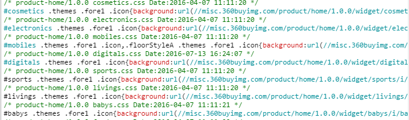
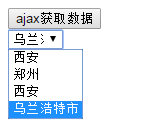
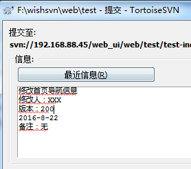

1、ID and class naming
ID和class(类)名总是使用可以反应元素目的和用途的名称，或其他通用名称。代替表象和晦涩难懂的
名称。 应该首选具体和反映元素目的的名称，因为这些是最可以理解的，而且发生变化的可能性最小。 通用名称只是多个元素的备用名，他们兄弟元素之间是一样的，没有特别意义。区分他们，使他们
具有特殊意义，通常需要为“帮手”。 尽管class(类)名和ID 的语义化对于计算机解析来说没有什么实际的意义，语义化的名称 通常是正确
的选择，因为它们所代表的信息含义，不包含表现的限制。
不推荐
1..fw-800 {
2. font-weight: 800;
3.}
4..red {
5. color: red;
6.}推荐
1..heavy {
2. font-weight: 800;
3.}
4..important {
5. color: red;
6.}2、合理的避免使用ID
一般情况下ID不应该被应用于样式。 ID的样式不能被复用并且每个页面中你只能使用一次ID。 使用ID唯一有效的是确定网页或整个站点中的位置。 尽管如此，你应该始终考虑使用class，而不是id，除非只使用一次。
不推荐
1.#content .title {
2. font-size: 2em;
3.}推荐
1..content .title {
2. font-size: 2em;
3.}另一个反对使用ID的观点是含有ID选择器权重很高。 一个只包含一个ID选择器权重高于包含1000个class(类)名的选择器，这使得它很奇怪。
1.// 这个选择器权重高于下面的选择器
2.#content .title {
3. color: red;
4.}
5.// than this selector!
6.html body div.content.news-content .title.content-title.important {
7. color: blue;
8.}3、CSS选择器中避免标签名
标签名 当构建选择器时应该使用清晰， 准确和有语义的class(类)名。不要使用标签选择器。 如果你只关心你的
class(类)名 ，而不是你的代码元素，这样会更容易维护。 从分离的角度考虑,在表现层中不应该分配html标记/语义。 它可能是一个有序列表需要被改成一个无序列表，或者一个div将被转换成article。 如果你只使用具有实际意义的class(类)名， 并且不使用元素选择器，那么你只需要改变你的html标记，而不用改动你的CSS。
不推荐
1.div.content > header.content-header > h2.title {
2. font-size: 2em;
3.}推荐
1..content > .content-header > .title {
2. font-size: 2em;
3.}css层级 CSS选择器层数决定页面渲染快慢，推荐使用层数为4层提高页面渲染速度。如下为京东商城页面样式表：

ID和CLASS： ID是唯一的。所以尽量在结构外围使用，通常用于页面布局。 Class是可重复的。所以尽量在结构内部使用，通常用于样式定义。 ID的样式优先级高于Class。 【注意】：页面样式多使用class少使用ID属性；
4、尽可能的精确
很多前端开发人员写选择器链的时候不使用 直接子选择器（注：直接子选择器和后代选择器的区别）。 有时，这可能会导致疼痛的设计问题并且有时候可能会很耗性能。 然而，在任何情况下，这是一个非常不好的做法。 如果你不写很通用的，需要匹配到DOM末端的选择器， 你应该总是考虑直接子选择器。 考虑下面的DOM:
1.<article class="content news-content"> 2. <span class="title">News event</span> 3. <div class="content-body"> 4. <div class="title content-title"> 5. Check this out 6. </div> 7. <p>This is a news article content</p> 8. <div class="teaser"> 9. <div class="title">Buy this</div> 10. <div class="teaser-content">Yey!</div> 11. </div> 12. </div> 13.</article>
下面的CSS将应用于有title类的全部三个元素。 然后，要解决content类下的title类 和 teaser类下的title类下不同的样式，这将需要更精确的选择器再次
重写他们的样式。
不推荐
1..content .title {
2. font-size: 2rem;
3.}推荐
1..content > .title {
2. font-size: 2rem;
3.}
4..content > .content-body > .title {
5. font-size: 1.5rem;
6.}
7..content > .content-body > .teaser > .title {
8. font-size: 1.2rem;
9.}5、属性书写顺序
[建议] 同一 rule set 下的属性在书写时，应按功能进行分组，并以 Formatting Model（布局方式、
位置） > Box Model（尺寸） > Typographic（文本相关） > Visual（视觉效果） 的顺序书写，
以提高代码的可读性。 解释： * Formatting Model 相关属性包括：position / top / right / bottom / left / float / display
/ overflow 等 * Box Model 相关属性包括：border / margin / padding / width / height 等 * Typographic 相关属性包括：font / line-height / text-align / word-wrap 等 * Visual 相关属性包括：background / color / transition / list-style 等 另外，如果包含 content 属性，应放在最前面。 示例：
1、.sidebar {
2、 /* formatting model: positioning schemes / offsets / z-indexes / display / ... */
3、 position: absolute;
4、 top: 50px;
5、 left: 0;
6、 overflow-x: hidden;
7、 /* box model: sizes / margins / paddings / borders / ... */
8、 width: 200px;
9、 padding: 5px;
10、 border: 1px solid #ddd;
11、 /* typographic: font / aligns / text styles / ... */
12、 font-size: 14px;
13、 line-height: 20px;
14、 /* visual: colors / shadows / gradients / ... */
15、 background: #f5f5f5;
16、 color: #333;
17、 -webkit-transition: color 1s;
18、 -moz-transition: color 1s;
19、 transition: color 1s;
20、}6、缩写属性
CSS提供了各种缩写属性（如 font 字体）应该尽可能使用，即使在只设置一个值的情况下。 使用缩写属性对于代码效率和可读性是有很有用的。
不推荐
1.border-top-style: none; 2.font-family: palatino, georgia, serif; 3.font-size: 100%; 4.line-height: 1.6; 5.padding-bottom: 2em; 6.padding-left: 1em; 7.padding-right: 1em; 8.padding-top: 0;
推荐
1.border-top: 0; 2.font: 100%/1.6 palatino, georgia, serif; 3.padding: 0 1em 2em;
7、0 和 单位
省略“0”值后面的单位。不要在0值后面使用单位，除非有值。
不推荐
1.padding-bottom: 0px; 2.margin: 0em;
推荐
1.padding-bottom: 0; 2.margin: 0;
8、十六进制表示法
在可能的情况下，使用3个字符的十六进制表示法。 颜色值允许这样表示， 3个字符的十六进制表示法更简短。 始终使用小写的十六进制数字。
不推荐
1.color: #FF33AA;
推荐
1.color: #f3a;
9、ID 和 Class（类） 名的分隔符
使用连字符（中划线）分隔ID和Class（类）名中的单词。为了增强课理解性，在选择器中不要使用
除了连字符（中划线）以为的任何字符（包括没有）来连接单词和缩写。 另外，作为该标准，预设属性选择器能识别连字符（中划线）作为单词[attribute|=value]的分隔符， 所以最好的坚持使用连字符作为分隔符。
不推荐
1. .demoimage {}
2. .error_status {}推荐
1. #video-id {}
2. .ads-sample {}10、Hacks
避免用户代理检测以及CSS“hacks” – 首先尝试不同的方法。通过用户代理检测或特殊的CSS滤镜，
变通的方法和 hacks 很容易解决样式差异。为了达到并保持一个有效的和可管理的代码库，这两种方法
都应该被认为是最后的手段。换句话说，从长远来看，用户代理检测和hacks会伤害项目，作为项目往往
应该采取阻力最小的途径。也就是说，轻易允许使用用户代理检测和hacks 以后将过于频繁。 [建议] 需要添加 hack 时应尽可能考虑是否可以采用其他方式解决。 解释： 如果能通过合理的 HTML 结构或使用其他的 CSS 定义达到理想的样式，则不应该使用 hack
手段解决问题。通常 hack 会导致维护成本的增加。 [建议] 尽量使用 选择器 hack 处理兼容性，而非 属性 hack。 解释： 尽量使用符合 CSS 语法的 selector hack，可以避免一些第三方库无法识别 hack 语法的问题。 示例：
1、/* IE 7 */*:first-child + html #header {
2、 margin-top: 3px;
3、 padding: 5px;
4、}
5、/* IE 6 */* html #header {
6、 margin-top: 5px;
7、 padding: 4px;
8、}[建议] 尽量使用简单的 属性 hack。 示例：
1、.box {
2、 _display: inline; /* fix double margin */
3、 float: left;
4、 margin-left: 20px;
5、}
6、.container {
7、 overflow: hidden;
8、 *zoom: 1; /* triggering hasLayout */
9、}11、声明顺序
这是一个选择器内书写CSS属性顺序的大致轮廓。这是为了保证更好的可读性和可扫描重要。 作为最佳实践，我们应该遵循以下顺序（应该按照下表的顺序）： 1.结构性属性： 1.display 2.position, left, top, right etc. 3.overflow, float, clear etc. 4.margin, padding 2.表现性属性： 1.background, border etc. 2.font, text
不推荐
1..box {
2. font-family: 'Arial', sans-serif;
3. border: 3px solid #ddd;
4. left: 30%;
5. position: absolute;
6. text-transform: uppercase;
7. background-color: #eee;
8. right: 30%;
9. isplay: block;
10. font-size: 1.5rem;
11. overflow: hidden;
12. padding: 1em;
13. margin: 1em;
14.}推荐
1..box {
2. display: block;
3. position: absolute;
4. left: 30%;
5. right: 30%;
6. overflow: hidden;
7. margin: 1em;
8. padding: 1em;
9. background-color: #eee;
10. border: 3px solid #ddd;
11. font-family: 'Arial', sans-serif;
12. font-size: 1.5rem;
13. text-transform: uppercase;
14.}12、声明结束
为了保证一致性和可扩展性，每个声明应该用分号结束，每个声明换行。
不推荐
1..test {
2. display: block; height: 100px
3.}推荐
1..test {
2. display: block;
3. height: 100px;
4.}13、属性名结束
属性名的冒号后使用一个空格。出于一致性的原因， 属性和值（但属性和冒号之间没有空格）的之间始终使用一个空格。
不推荐
1.h3 {
2. font-weight:bold;
3.}推荐
1.h3 {
2. font-weight: bold;
3.}14、选择器和声明分离
每个选择器和属性声明总是使用新的一行。
不推荐
1.a:focus, a:active {
2. position: relative; top: 1px;
3.}推荐
1.h1,
2.h2,
3.h3 {
4. font-weight: normal;
5. line-height: 1.2;
6.}15、规则分隔
规则之间始终有一个空行（双换行符）分隔。
推荐
1.html {
2. background: #fff;
3.}
4.body {
5. margin: auto;
6. width: 50%;
7.}16、CSS引号
属性选择器或属性值用双引号（””），而不是单引号（”）括起来。 URI值（url()）不要使用引号。
不推荐
1.@import url('//cdn.com/foundation.css');
2.html {
3. font-family: 'open sans', arial, sans-serif;
4.}
5.body:after {
6. content: 'pause';
7.}推荐
1.@import url(//cdn.com/foundation.css);
2.html {
3. font-family: "open sans", arial, sans-serif;
4.}
5.body:after {
6. content: "pause";
7.}17、选择器嵌套 (SCSS)
在Sass中你可以嵌套选择器，这可以使代码变得更清洁和可读。嵌套所有的选择器，但尽量避免嵌套
没有任何内容的选择器。 如果你需要指定一些子元素的样式属性，而父元素将不什么样式属性， 可以使用常规的CSS选择器链。 这将防止您的脚本看起来过于复杂。
不推荐
1.// Not a good example by not making use of nesting at all
2..content {
3. display: block;
4.}
5..content > .news-article > .title {
6. font-size: 1.2em;
7.}不推荐
1.// Using nesting is better but not in all cases
2.// Avoid nesting when there is no attributes and use selector chains instead
3..content {
4. display: block;
5. > .news-article {
6. > .title {
7. font-size: 1.2em;
8. }
9. }
10.}推荐
1.// This example takes the best approach while nesting but use selector chains where possible
2..content {
3. display: block;
4. > .news-article > .title {
5. font-size: 1.2em;
6. }
7.}18、嵌套中引入 空行 (SCSS)
嵌套选择器和CSS属性之间空一行。
不推荐
1..content {
2. display: block;
3. > .news-article {
4. background-color: #eee;
5. > .title {
6. font-size: 1.2em;
7. }
8. > .article-footnote {
9. font-size: 0.8em;
10. }
11. }
12.}推荐
1..content {
2. display: block;
3. > .news-article {
4. background-color: #eee;
5. > .title {
6. font-size: 1.2em;
7. }
8. > .article-footnote {
9. font-size: 0.8em;
10. }
11. }
12.}19、上下文媒体查询(SCSS)
在Sass中，当你嵌套你的选择器时也可以使用上下文媒体查询。 在Sass中，你可以在任何给定的嵌套层次中使用媒体查询。 由此生成的CSS将被转换，这样的媒体查询将包裹选择器的形式呈现。 这技术非常方便， 有助于保持媒体查询属于的上下文。 第一种方法这可以让你先写你的手机样式，然后在任何你需要的地方 用上下文媒体查询以提供桌面样式。
不推荐
1.// This mobile first example looks like plain CSS where the whole structure of SCSS is repeated 2.// on the bottom in a media query. This is error prone and makes maintenance harder as
it's not so easy to relate 3.// the content in the media query to the content in the upper part (mobile style) 4..content-page { 5. font-size: 1.2rem; 6. > .main { 7. background-color: whitesmoke; 8. 9. > .latest-news { 10. padding: 1rem; 11. 12. > .news-article { 13. padding: 1rem; 14. 15. > .title { 16. font-size: 2rem; 17. } 18. } 19. } 20. 21. > .content { 22. margin-top: 2rem; 23. padding: 1rem; 24. } 25. } 26. 27. > .page-footer { 28. margin-top: 2rem; 29. font-size: 1rem; 30. } 31.} 32. 33.@media screen and (min-width: 641px) { 34. .content-page { 35. font-size: 1rem; 36. 37. > .main > .latest-news > .news-article > .title { 38. font-size: 3rem; 39. } 40. 41. > .page-footer { 42. font-size: 0.8rem; 43. } 44. } 45.}
推荐
1.// This is the same example as above but here we use contextual media queries in order
to put the different styles 2.// for different media into the right context. 3. 4..content-page { 5. font-size: 1.2rem; 6. 7. @media screen and (min-width: 641px) { 8. font-size: 1rem; 9. } 10. 11. > .main { 12. background-color: whitesmoke; 13. 14. > .latest-news { 15. padding: 1rem; 16. 17. > .news-article { 18. padding: 1rem; 19. 20. > .title { 21. font-size: 2rem; 22. 23. @media screen and (min-width: 641px) { 24. font-size: 3rem; 25. } 26. } 27. } 28. } 29. 30. > .content { 31. margin-top: 2rem; 32. padding: 1rem; 33. } 34. } 35. 36. > .page-footer { 37. margin-top: 2rem; 38. font-size: 1rem; 39. 40. @media screen and (min-width: 641px) { 41. font-size: 0.8rem; 42. } 43. } 44.}
20、嵌套顺序和父级选择器(SCSS)
当使用Sass的嵌套功能的时候， 重要的是有一个明确的嵌套顺序， 以下内容是一个SCSS块应具有的顺序。 1.当前选择器的样式属性 2.父级选择器的伪类选择器 (:first-letter, :hover, :active etc) 3.伪类元素 (:before and :after) 4.父级选择器的声明样式 (.selected, .active, .enlarged etc.) 5.用Sass的上下文媒体查询 6.子选择器作为最后的部分 The following example should illustrate how this ordering will achieve a clear structure while
making use of the Sass parent selector.
Recommended
1..product-teaser {
2. // 1. Style attributes
3. display: inline-block;
4. padding: 1rem;
5. background-color: whitesmoke;
6. color: grey;
7.
8. // 2. Pseudo selectors with parent selector
9. &:hover {
10. color: black;
11. }
12.
13. // 3. Pseudo elements with parent selector
14. &:before {
15. content: "";
16. display: block;
17. border-top: 1px solid grey;
18. }
19.
20. &:after {
21. content: "";
22. display: block;
23. border-top: 1px solid grey;
24. }
25.
26. // 4. State classes with parent selector
27. &.active {
28. background-color: pink;
29. color: red;
30.
31. // 4.2. Pseuso selector in state class selector
32. &:hover {
33. color: darkred;
34. }
35. }
36.
37. // 5. Contextual media queries
38. @media screen and (max-width: 640px) {
39. display: block;
40. font-size: 2em;
41. }
42.
43. // 6. Sub selectors
44. > .content > .title {
45. font-size: 1.2em;
46.
47. // 6.5. Contextual media queries in sub selector
48. @media screen and (max-width: 640px) {
49. letter-spacing: 0.2em;
50. text-transform: uppercase;
51. }
52. }
53.}21、数据长度超出容器大小或小于容器大小：
div布局时尽量使用自适应，使用分页显示功能； 固定布局大小时考虑到元素content的最大数据容量，例如：不同省市名称长度是否影响布局，我们的
数据是可变的，显示不完整的采用隐藏，并添加说明。友好的给用户提供有用信息。 知道每个div模块的是否加载动态和静态数据。哪些应该写死，哪些应该动态数据加载，考虑到调用数据
时会不会影响整个元素模块。明确自己要实现的功能效果。例如：如下数据就会显示不全。

22、页面分工及SVN使用步骤
1. div模块分工： a. 搭建项目主题框架结构。引用框架JS文件，CSS样式初始文件；公用部分只能加载，请不要修改
内容；有问题请协商。 b. div功能模块实现分工，代码提交SVN； 2. SVN使用步骤： 代码合入步骤如下： 1）SVN更新：获取最新的代码源文件； 2）获取锁定：获得锁，文件只能一个人操作； 3）[比较文件]：将修改文件与SVN更新的文件比较确定更新内容，避免覆盖他人已合入的正确代码； 4）-- SVN提交：将修改的内容上传到服务器，提交后，被提交的文件的锁自动释放；(在提交
对话框中，提交代码时，请按下面的模板填写合入信息。例如修改或添加的信息，修改人，版本，
时间相关备注信息。)

5）-- 解除锁定：不合并修改的内容，直接释放锁。